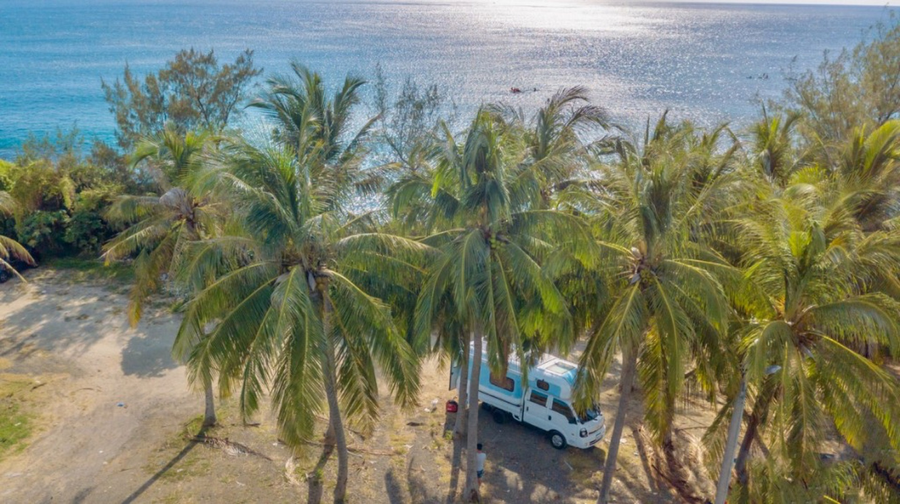
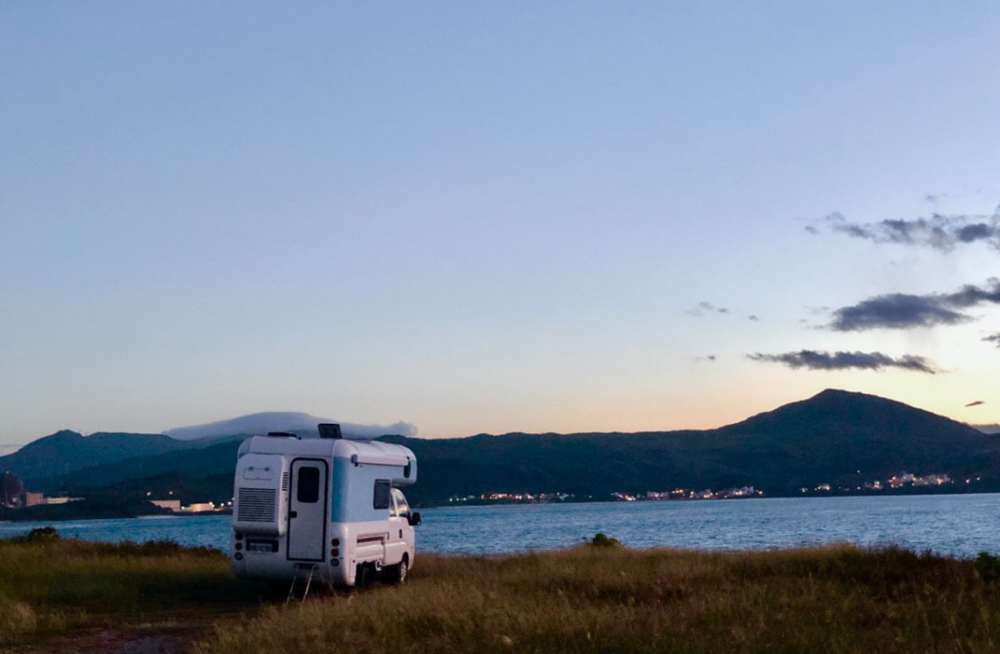
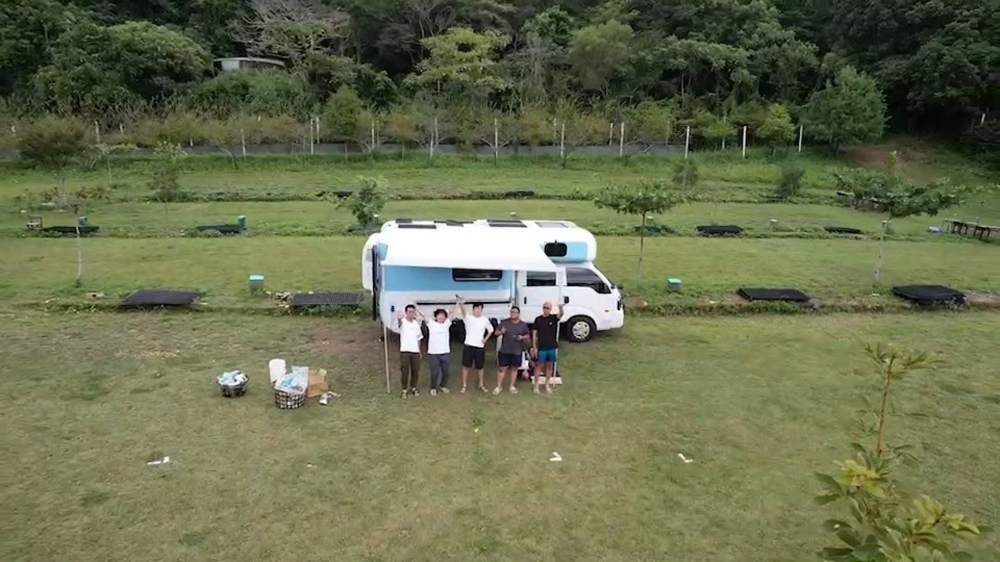
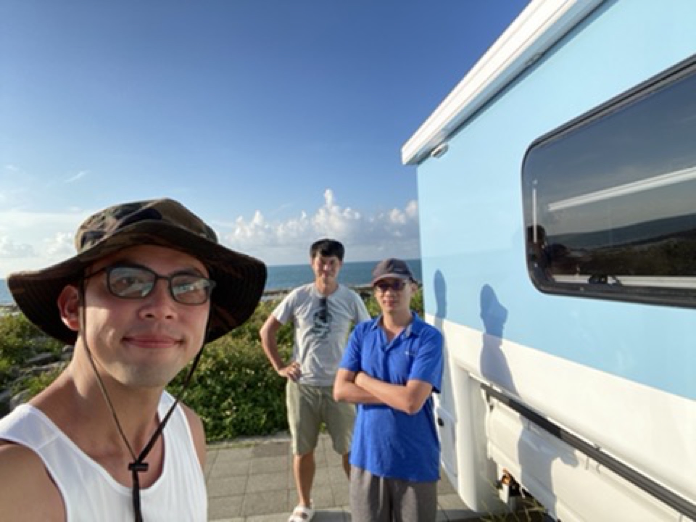
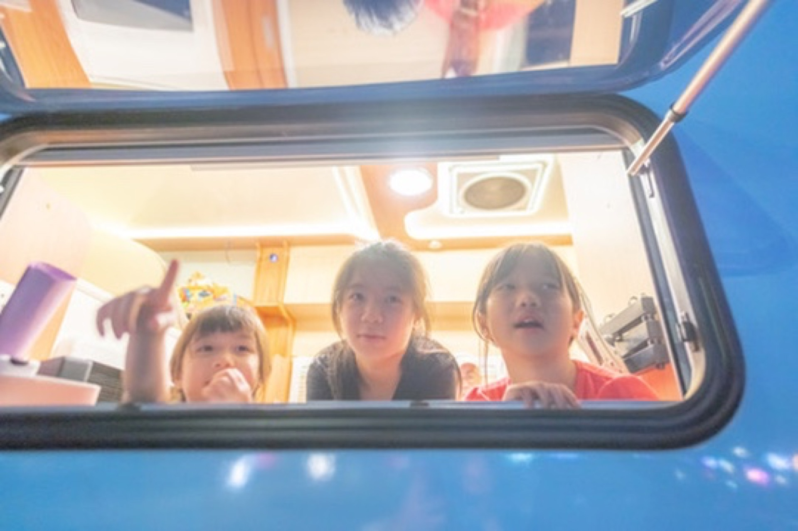
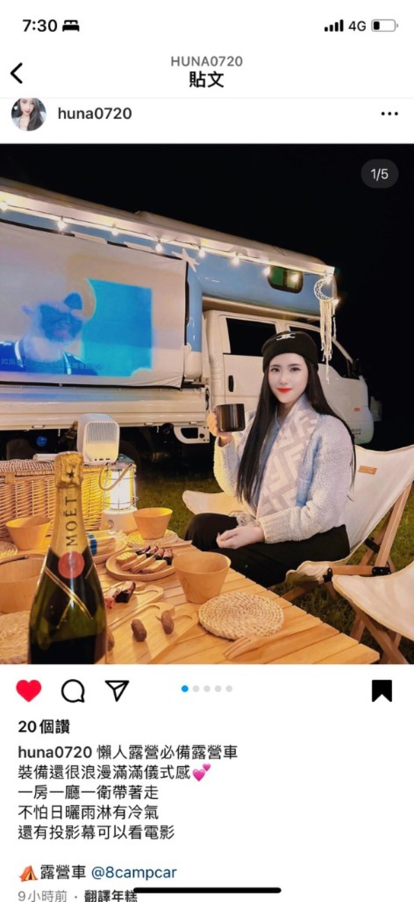
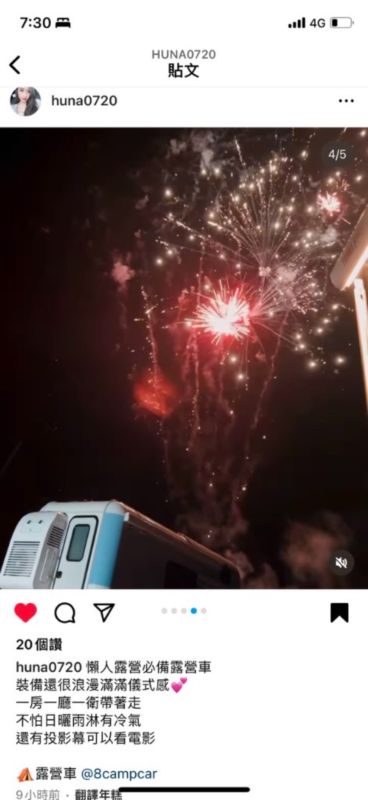
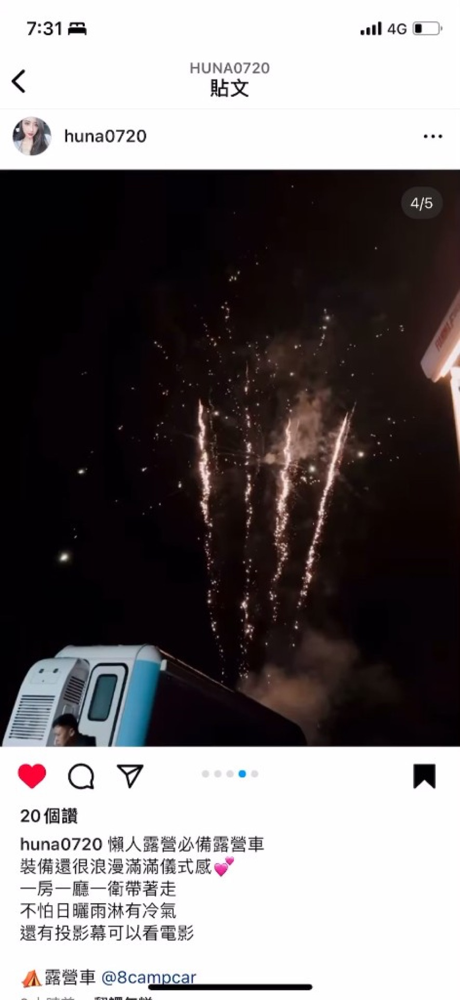
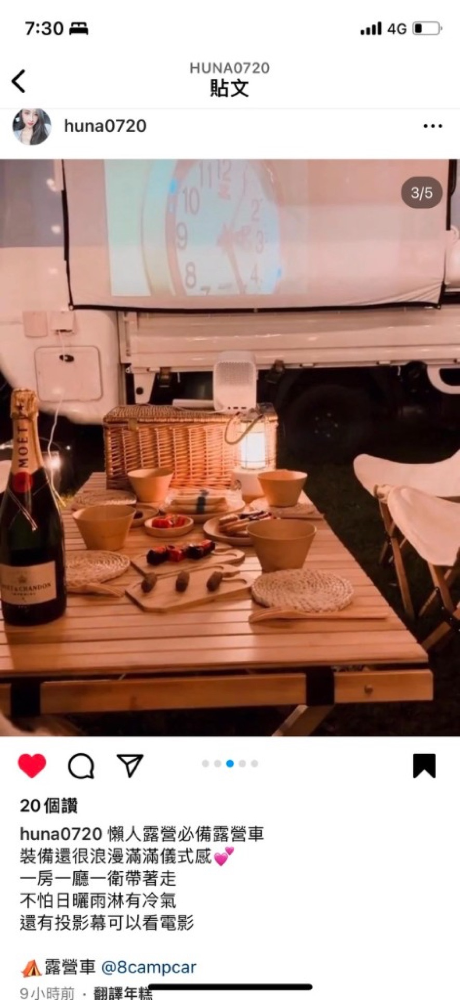

海邊路線
看海、吹風、慢慢煮東西
適合喜歡看海、拍照、吹風、慢慢煮東西的人。可安排北海岸、宜蘭海邊、新竹海線、苗栗海線等方向。
行程不用排太滿，給自己留時間「停下來」享受。
露營車旅行最適合慢慢玩，不建議每天開太遠、排太多景點。建議一天安排 1 到 2 個主要停留點，把時間留給煮飯、休息、散步、拍照與享受風景。
露營車本身就是移動的小屋，所以真正的樂趣不在於跑多少地方，而在於「到了一個好地方，可以把車停下來，愉快地待在那裡」。
熟悉外接電源、充電、補水、洗澡與車內設備，之後再嘗試不同地點。
第一次租露營車，建議第一晚安排在有水電、衛浴與管理人員的露營區。這樣可以比較安心地熟悉外接電源、充電、補水、洗澡與車內設備，第二晚再挑戰比較自由的地點會更輕鬆。
依旅伴與風格挑選，先看看哪一類最對味。
適合喜歡看海、拍照、吹風、慢慢煮東西的人。可安排北海岸、宜蘭海邊、新竹海線、苗栗海線等方向。
適合喜歡森林、涼爽空氣、營火、安靜過夜的人。可安排桃園、新竹、苗栗、南投等山區露營區。
適合家庭、小孩、第一次體驗露營車的人。建議選擇車程不要太遠、有廁所、有水電、有草地的露營區。
適合朋友聚會、生日旅行、情侶旅行。可以搭配網美露營套組、燈串、戶外桌椅，選擇風景漂亮的地方拍照。
露營車也可作為活動休息室、臨時更衣室、工作人員休息空間、比賽或戶外活動支援車。活動用途請另外詢問報價與送車安排。
南國海風、椰林與海岸線，最適合把露營車當成移動小屋，慢慢玩、慢慢拍。
墾丁這一帶海藍、沙灘、椰林與草原一次打包，開露營車可以依心情換停靠點：白天玩水、傍晚開伙看落日，夜裡在車上休息聽海。以下兩張照片是墾丁海線露營車氛圍的靈感參考，實際路線與合法停靠仍以現場與預約時說明為準。


以下為實際客人出遊畫面參考：親子、好友揪團或情侶慢遊都適合；豪華露營車搭配戶外開伙、投影與夜景，容易拍出滿意照片、累積旅行好回憶。







先給你 3 個簡單版本，實際安排可以再一起討論。
持續更新中。以下為目前整理的方向與外部資源。
目前先做版面與基礎文字，後續會陸續補上完整文章與地圖內容。